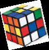
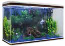
The most beautiful plane figure is the circle and the most beautiful solid figure is the sphere. - Pythagoras.
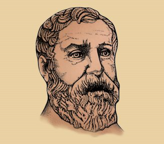
Heron
A.D (C.E) 10-75
Heron of Alexandria was a Greek mathematician. He wrote books on mathematics, mechanics and physics. His famous book ‘Metrica’ consists of three volumes. This book shows the way to calculate area and volume of plane and solid figures. Heron has derived the formula for the area of triangle when three sides are given.
Learning Outcomes
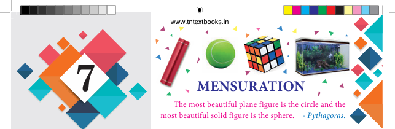
Mensuration is the branch of mathematics which deals with the study of areas and volumes of different kinds of geometrical shapes. In the broadest sense, it is all about the process of measurement.
Mensuration is used in the field of architecture, medicine, construction, etc. It is necessary for everyone to learn formulae used to find the perimeter and area of two-dimensional figures as well as the surface area and volume of three-dimensional solids in day-to-day life. In this chapter we deal with finding the area of triangles (using Heron’s formula), surface area and volume of cuboids and cubes.
For a closed plane figure (a quadrilateral or a triangle), what do we call the distance around its boundary? What is the measure of the region covered inside the boundary?
In general, the area of a triangle is calculated by the formula
Area = 1 divided by 2 multiply Base multiply Height square units
That is, A= 1/ 2 x b x h sq. units
A is equal to one divided by 2 multiply b multiply h square units
where, b is base and h is height of the triangle. From the above, we know how to find the area of a triangle when its ‘base’ and ‘height’ (that is altitude) are given.
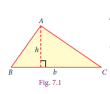
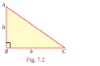
How will you find the area of a triangle, if the height is not known but the lengths of the three sides are known?
For this, Heron has given a formula to find the area of a triangle.
If a, b and c are the sides of a triangle, then the area of a triangle is equal to whole square root of s bracket open s difference a bracket close bracket open s difference b bracket close bracket open s difference c bracket close square units
s is equal to a plus b plus c divided by 2 ‘s’ is the semi-perimeter (that is half of the perimeter) of the triangle.
Figure 7.3
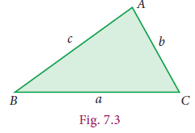
Note
If we assume that the sides are of equal length that is a = b = c, then Heron’s formula will be root 3 divided by 4 a power 2 square Units, which is the area of an equilateral triangle.
Example 7.1
The lengths of sides of a triangular field are 28 m, 15 m and 41 m. Calculate the area of the field. Find the cost of levelling the field at the rate of ₹ 20 per m2.
Solution Let a = 28 metre, b = 15 metre and c = 41 metre
Then, s is equal to a plus b plus c divided by 2 equal to 28 plus 15 plus 41 divided by 2 equal to 84 divided by 2 is equal to 42 metre
Area of triangular field = √s(s- a)(s- b)(s- c)
=√42 (42- 28)( 42- 15)( 42-41 )
= √42x 14x 27x 1
=√2x3x7x7x2x3x3x3x1
=2x3x7x3
=126 metre power 2
Area of the triangle field is equal to square root of s multiply bracket open (s minus a) multiply (s minus b) multiply by (s minus c)
is equal to square root of 42 multiply (42 minus 28) multiply (42 minus 15) multiply (42 minus 41)
is equal to square root of (42 multiply 14 multiply 27 multiply 1)
is equal to root (2 multiply 3 multiply 7 multiply 7 multiply 2 multiply 3 multiply 3 multiply 3 multiply 1)
is equal to 2 multiply 3 multiply 7 multiply 3
is equal to 126 square centimeter
Given the cost of levelling is ₹ rupees 20 per m power 2.
The total cost of levelling the field = 20 multiply 126 = ₹ rupees 2520.
Example 7.2
Three different triangular plots are available for sale in a locality. Each plot has a perimeter of 120 metre. The side lengths are also given:
Shape of plot |
Perimeter |
Length of sides |
Right angled triangle |
120 meter |
30 meter, 40 meter, 50 meter |
Acute angled triangle |
120 meter |
35 meter, 40 meter, 45 meter |
Equilateral triangle |
120 meter |
40 meter, 40 meter, 40 meter |
m Help the buyer to decide which among these will be more spacious.
Solution For clarity, let us draw a rough figure indicating the measurements:
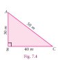
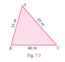
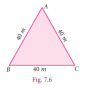
Figure7.5, s =35+ 40+ 45/2= 60 m
Figure 7.6, s = 40+ 40+ 40/ 2= 60m
Figure 7.4 area of triangle is equal to root (60 (60 minus 30) (60minus 40) (60 minus 50) )
is equal to root (60 multiply 30 multiply 20 multiply 10)
is equal to root (30 multiply 2 multiply 30 multiply 2 multiply 10 multiply 10)
is equal to 600 square centimeters
Figure 7.5 area of triangle is equal to root (60(60 minus 35) (60 minus 40) (60 minus 45) )
is equal to root (60 multiply 25 multiply 20 multiply 15)
is equal to root (20 multiply 3 multiply 5 multiply 5 multiply 20 multiply 3 multiply 5)
is equal to 300 root of 5 ( if root 5 is equal to 2.236)
is equal to 670 Point 8 square metre
In Figure 7.6 area of triangle is equal to whole root of ( 60 bracket of ( 60 minus 40 ) ( 60 minus 40 ) (60 minus 40) )
is equal to root ( 60 multiply 20 multiply 20 multiply 20 )
is equal to root (3 multiply 20 multiply 20 multiply 20 multiply 20)
is equal to 400 root 3 (if root 3 is equal to 1 point 732)
is equal to 692.8 square metre
Note that all the semi-perimeters are equal.
In Fig.7.4, Area of triangle = √60( 60- 30) (60- 40)( 60-50 )
= √60x 30 x20x 10
=√30x2x30x2x10x10
=600m2
In Fig.7.5, Area of triangle = √60(60- 35)(60- 40)(60-45)
= √60x25 x20x 15
= √20x 3x 5x 5x 20 x3 x5
= 300√ 5 ( Since √5= 2.236)
= 6708 metre squad
In Fig.7.6, Area of triangle = √60(60-40)(60- 40)(60- 40)
= √60x20x 20x 20
= √3x 20 x20 x20x 20
= 400 √3 ( Since √3 =1.732)
= 692.8m squad
We find that though the perimeters are same, the areas of the three triangular plots are different. The area of the triangle in Fig 7.6 is the greatest among these; the buyer can be suggested to choose this since it is more spacious.
Note
If the perimeter of different types of triangles have the same value, among all the types of triangles, the equilateral triangle possess the greatest area. We will learn more about maximum areas in higher classes.
A plane figure bounded by four-line segments is called a quadrilateral.
Let ABCD be a quadrilateral. To find the area of a quadrilateral, we divide the quadrilateral into two triangular parts and use Heron’s formula to calculate the area of the triangular parts.
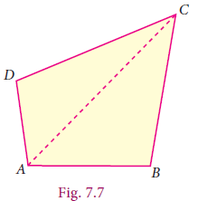
In Fig 7.7,
Area of quadrilateral ABCD = Area of triangle ABC + Area of triangle ACD
Example 7.3 A farmer has a field in the shape of a rhombus. The perimeter of the field is 400m and one of its diagonal is 120m. He wants to divide the field into two equal parts to grow two different types of vegetables. Find the area of the field.
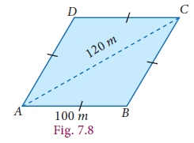
Solution
Let ABCD be the rhombus.
Its perimeter = 4 × side = 400 m
Therefore, each side of the rhombus = 100 m
Given the length of the diagonal AC = 120 m
In △ABC, let a =100 m, b =100 m, c =120 m
s = a +b+ c/ 2= 100 +100+ 120 /2 = 160 m
Area of triangleABC = √160 (160- 100)( 160 -100)( 160 - 120 ) = √160 x60 x60 x40
=√ 40x 2x 2x 60x 60x 40 =√ 40x 2x 60= 4800 m2
.Therefore, Area of the field ABCD= 2 x Area of triangle ABC = 2 x4800= 9600 m2
Exercise 7.1
1. Using Heron’s formula, find the area of a triangle whose sides are
(i) 10 cm, 24 cm, 26 cm (ii) 1.8m, 8 m, 8.2 m
2. The sides of the triangular ground are 22 m, 120 m and 122 m. Find the area and cost of levelling the ground at the rate of ₹ 20 per m2.
3. The perimeter of a triangular plot is 600 m. If the sides are in the ratio 5:12:13, then find the area of the plot.
4. Find the area of an equilateral triangle whose perimeter is 180 cm.
5. An advertisement board is in the form of an isosceles triangle with perimeter 36m and each of the equal sides are 13 m. Find the cost of painting it at ₹ 17.50 per square metre.
6. Find the area of the unshaded region.
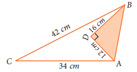
7. Find the area of a quadrilateral ABCD whose sides are AB cm= 13, BC cm= 12, CD cm= 9, AD cm = 14and diagonal BD cm= 15.
8. A park is in the shape of a quadrilateral. Th e sides of the park are 15 m, 20 m, 26 m and 17 m and the angle between the first two sides is a right angle. Find the area of the park.
9. A land is in the shape of rhombus. The perimeter of the land is 160 m and one of the diagonal is 48 m. Find the area of the land.
10. The adjacent sides of a parallelogram measures 34 m, 20 m and the measure of one of the diagonal is 42 m. Find the area of parallelogram.
Exercise 7.1
1.(i) 120 cm2 (ii) 7.2 m2 2. 1320 m2, ₹26400 3. 12000 m2
4. 1558.8 cm2
5. ₹ 1050
6. 240 cm2
7. 138 cm2
8. 354m2
9. 1536 m2
10. 672 m2
We have learnt in the earlier classes about 3-Dimension structures. The 3D shapes are those which do not lie completely in a plane. Any 3D shape has dimensions namely length, breadth and height.
Cuboid: A cuboid is a closed solid figure bounded by six rectangular plane regions. For example, match box, Brick, Book.
A cuboid has 6 faces, 12 edges and 8 vertices. Ultimately, a cuboid has the shape of a rectangular box.
Total Surface Area (TSA) of a cuboid is the sum of the areas of all the faces that enclose the cuboid. If we leave out the areas of the top and bottom of the cuboid we get what is known as its Lateral Surface Area (LSA).
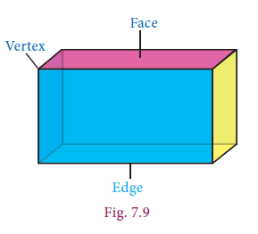
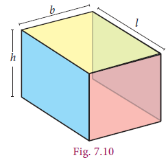
In the Fig 7.10, l, b and h represents length, breadth and height respectively.
(i) Total Surface Area (TSA) of a cuboid
Top and bottom 2 × lb
Front and back 2 × bh
Left and Right sides 2 × lh
= 2 (lb + bh + lh ) squareunits.
Equal 2 all in bracket lb plus bh plus lh square units
Front and back 2 × bh
Left and Right sides 2 × lh
= 2 (l+b)h square units.
Equal 2 all in bracket l plus b square units
We are using the concept of Lateral Surface Area (LSA) and Total Surface Area (TSA) in real life situations. For instance, a room can, be cuboidal in shape that has different length, breadth and height. If we require to find areas of only the walls of a room, avoiding floor and ceiling then we can use LSA. However, if we want to find the surface area of the whole room then we have to calculate the TSA.
If the length, breadth and height of a cuboid are l, b and h respectively. Then (i)Total Surface Area = 2 (lb + bh + lh ) square Units. (ii) Lateral Surface Area = 2 (l+b)h square Units.
Note
Example 7.4 Find the TSA and LSA of a cuboid whose length, breadth and height are
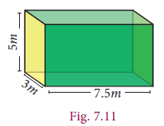
7.5 m, 3 m and 5 m respectively.
Solution Given the dimensions of the cuboid; that is length (l) = 7.5 m, breadth (b) = 3 m and height (h) = 5 m.
TSA = 2 (lb + bh + lh ) = 2[(7.5x 3)+( 3x 5)+( 7. 5x5)]
=2(22.5+15+37.5) = 2× 75 = 150 m2
LSA = 2(l+ b)xh = 2(7.5 +3)x5
= 2 X10.5 X5 = 105 m2
cuboid length, breadth and height are (l) is equal to 7.5 metre , breadth (b) is equal to 3 metre and (h) is equal to 5 metre
tsa is equal to 2(lb plus bh plus lh)
is equal to 2[(7.5 multiply 3) plus (3 multiply 5) plus (7.5 multiply 5) ]
is equal to 2 multiply of (22.5 plus 15 plus 37.5)
is equal to 2 multiply 75
is equal to 150 square meter
LSA is equal to 2 multiply (l plus b) multiply h
is equal to 2(7.5 plus 3) multiply 5
is equal to 2 multiply 10.5 multiply 5
is equal to 105 meter square
Example 7.5
The length, breadth and height of a hall are 25 m, 15 m and 5 m respectively. Find the cost of renovating its floor and four walls at the rate of ₹80 per m2.
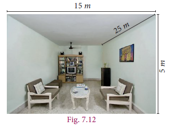
Solution
Here, length (l ) = 25 m, breadth (b) =15 m, height (h) = 5 m.
Area of four walls = LSA of cuboid
= 2(l+b) xh
= 2(25+15)X5
= 80X 5 = 400
is equal to 2(l plus b) multiply h
is equal to 2(25 plus 15) multiply 5
is equal to 80 multiply 5 is equal to 400 m2
Area of the floor equal lx b = 25x 15 equal 375 m squad
Total renovating area of the hall = (Area of four walls + Area of the floor)
Equal (400 plus 375)m2 equal 775 m squad
Therefore, cost of renovating at the rate of ₹80 per m power 2 equal 80 x775 equal rupees₹ 62,000
Cube: A cuboid whose length, breadth and height are all equal is called as a cube. That is a cube is a solid having six square faces. Here are some real-life examples.
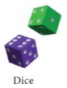
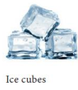
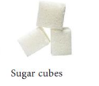
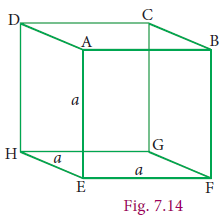
A cube being a cuboid has 6 faces, 12 edges and 8 vertices.
Consider a cube whose sides are ‘a’ units as shown in the Figure 7.14. Now,
Total Surface Area of the cube = sum of area of the faces is equal to (ABCD plus EFGH plus AEHD plus BFGC plus A BFE plus CDHG) is equal to (a square plus a square plus a square plus a square plus a square plus a square)
Lateral Surface Area of the cube = sum of area of the faces
is equal to (a square plus a square plus a square plus a square plus a square plus a square)
is equal to 4 a square units
If the side of a cube is a units, then,
1 The Total Surface Area = 6 into a power 2 square Units (ii) The Lateral Surface Area = 4 a2 sq. Units
Thinking Corner Can you get these formulae from the corresponding formula of Cuboid?
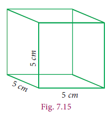
Example 7.6 Find the Total Surface Area and Lateral Surface Area of the cube, whose side is 5 cm.
Solution The side of the cube (a) equal 5 cm
Total Surface Area = 6a power 2 =6 multiply (5)equal 150 square cm
Lateral Surface Area = 4 into a power 2 equal 4 multiply (5) squad is 100 square cm
A cube as h Total Surface Area of 486 cm power 2
Find its lateral surface area.
Solution
Here, Total Surface Area of the cube equal 486 cm power 2
6a power 2 equal 486
a power 2 equal 486 by 6 and so a power 2 equal 81.This gives a equal 9
The side the cube equal 9cm
Lateral Surface Area equal 4 into a power 2 is equal to 4 multiply 9 power 2 = 4x 81 equal 324 cm power 2
Example 7.8 Two identical cubes of side 7 cm are joined end to end. Find the Total and Lateral surface area of the new resulting cuboid.
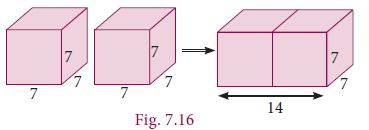
Solution
Side of a cube equal 7 centimetre
Now length of the resulting cuboid (l) equal 7+7 =14 centimetre
Breadth (b) equal 7 cm, Height (h) equal 7 centimetre
So, Total Surface Area= 2(lb+ bh+ lh) equal 2((14x 7)+( 7x 7)+( 14 x7))
= 2 all in bracket 98 plus 49 plus 98 equal 2 x245 equal 490 cm power 2
Lateral Surface Area equal 2(l+ b)xh equal 2(14+ 7+x7 ) equal 2 x21x7 = 294 cm power 2
Exercise 7.2
1. Find the Total Surface Area and the Lateral Surface Area of a cuboid whose dimensions are: length = 20 cm, breadth = 15 cm and height = 8 cm
2. The dimensions of a cuboidal box are 6 m × 400 cm × 1.5 m. Find the cost of painting its entire outer surface at the rate of ₹22 per m2.
3. The dimensions of a hall is 10 m × 9 m × 8 m. Find the cost of whitewashing the walls and ceiling at the rate of ₹8.50 per m2.
4. Find the TSA and LSA of the cube whose side is (i) 8 m (ii) 21 cm (iii) 7.5 cm
5. If the total surface area of a cube is 2400 cm2 then, find its lateral surface area.
6. A cubical container of side 6.5 m is to be painted on the entire outer surface. Find the area to be painted and the total cost of painting it at the rate of ₹24 per m2.
7. Three identical cubes of side 4 cm are joined end to end. Find the total surface area and lateral surface area of the new resulting cuboid.
ANSWER
Exercise 7.2
1. 1160cm2, 560cm2
2. ₹1716
3. ₹3349
4.(i) 384 m2, 256 m2 (ii) 2646 cm2, 1764 cm2 (iii) 337.5 cm2, 225 cm2
5. 1600 cm2
6. 253.50m2, ₹6084
7. 224cm2, 128cm2
All of us have tasted 50 ml and 100 ml of ice cream. Take one such 100 ml ice cream cup. This cup can contain 100 ml of water, which means that the capacity or volume of that cup is 100 ml. Take a 100 ml cup and find out how many such cups of water can fill a jug. If 10 such 100 ml cups can fill a jug then the capacity or volume of the jug is 1 litre (10x 100ml = 1000l=1 l). Further check how many such jug of water can fill a bucket. That is the capacity or volume of the bucket. Likewise, we can calculate the volume or capacity of any such things.
Volume is the measure of the amount of space occupied by a three dimensional solid. Cubic centimetres (cm3) , cubic metres (m3) are some cubic units to measure volume.
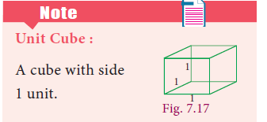
Volume of the solid is the product of ‘base area’ and ‘height’. This can easily be understood from a practical situation. You might have seen the bundles of A4 size paper. Each paper is rectangular in shape and has an area (=lb). When you pile them up, it becomes a bundle in the form of a cuboid; h times lb make the cuboid.
Let the length, breadth and height of a cuboid be l, b and h respectively. Then, volume of the cuboid V = (cuboid’s base area) × height
= (lx b)xh = lbh cubic units
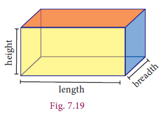
Note
The units of length, breadth and height should be same while calculating the volume of a cuboid.
Example 7.9
The length, breadth and height of a cuboid is 120 mm, 10 cm and 8 cm respectively. Find the volume of 10 such cuboids.
Solution Since both breadth and height are given in cm, it is necessary to convert the length also in cm. So, we get, l = 120 mm= = 120/ 10= 12 cm and take b = 10 cm, h = 8 cm as such.
Volume of a cuboid =
lx bx h = 12 x10 x8 = 960 cm3
Volume of 10 such cuboids= 10 x960 = 9600 cm3
Example 7.10 The length, breadth and height of a cuboid are in the ratio 7:5:2. Its volume is 35840 cm3.Find its dimensions.
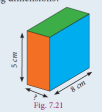
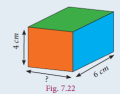
Solution
Let the dimensions of the cuboid be
l = 7x, b = 5 x and h = 2 x.
Given that volume of cuboid = 35840 cm3
l x b x h = 35840
(7 x)(5 x)(2 x)= 35840
70 x3= 35840
x3 = 35840 70
x3 = 512
x = 3√8x 8x 8 = 8 cm
Length of cuboid= 7× =7x8=56cm
Breadth of cuboid= 5x=5x 8= 40 cm
Height of cuboid= 2x=2 x8= 16 cm
Side of cuboid l is equal to 7x, b is equal to 5x
h is equal to 2x
Volume of cuboid is equal to 35840 qubic centimeter
l multiply b multiply h is equal to 35840
(7x) (5x) (2x) is equal to 35840
70x cube is equal to 35840
X cube is equal to 35840 by 70
X cube is equal to 512
x is equal to cube root of (8 multiply 8 multiply 8)
x is equal to 8 centimeter
length is equal to 7 x is equal to 7 multiply 8 is equal to 56 centi meter
cuboid breath is equal to 5x is equal to 5 multiply 8 is equal to 40 centi meter
cuboid heights equal to 2x is equal to 2 multiply 8 is equal to 16
Example 7.11 The dimensions of a fish tank are 3.8 m × 2.5 m × 1.6 m. How many litres of water it can hold?
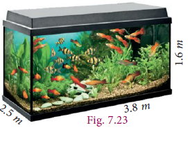
Solution Length of the fish tank l is equal to 3.8 m
Breadth of the fish tank b is equal to 2.5 2.5 m ,
Height of the fish tank h is equal to 1.6 1.6 m
Volume of the fish tank is equal to l multiply b multiply h
is equal to 3.8 multiply 2.5 multiply 1.6
is equal to 15.2 cube meter
is equal to 15.2 multiply 1000 litre
is equal to 15200 15200 litresNote
A few important conversations
1cm3=1ml,
1000 cm3=1 litre,
1m3=1000 litres
Example 7.12 The dimensions of a sweet box are 22 cm × 18 cm × 10 cm. How many such boxes can be packed in a carton of dimensions 1 m × 88 cm × 63 cm?
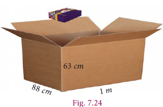
Solution
Here, the dimensions of a sweet box are Length (l) = 22cm, breadth (b) = 18cm, height (h) = 10 cm.
Volume of a sweet box = l × b × h = 22 x18 x10 cm3
The dimensions of a carton are Length (l) = 1m= 100 cm, breadth (b) = 88 cm, height (h) = 63 cm.
Volume of the carton = l × b × h = 100x 88x 63 cm3
The number of sweet boxes packed = volume of the carton /volume of a sweet box = 100x 88x 63/ 22x 18x 10 = 140 boxes
The dimensions of a sweet box are 22 cm × 18 cm × 10 cm. How many such boxes can be packed in a carton of dimensions 1 m × 88 cm × 63 cm?
Example 7.12 solution is equal to The number of sweet boxes packed = volume of the carton /volume of a sweet box = 100 multiply 88 multiply 63 by 22 multiply 18 multiply 10 is equal to 140 boxes
7.5.2 Volume of a Cube
It is easy to get the volume of a cube whose side is a units. Simply put l = b = h = a in the formula for the volume of a cuboid. We get volume of cube to be a3 cubic units.
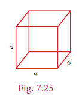
If the side of a cube is ‘a’ units then the Volume of the cube (V) = a3 cubic units.
Note
For any two cubes, the following results are true.
Example 7.13 Find the volume of cube whose side is 10 cm.
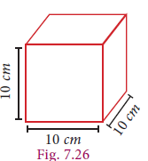
Solution Given that side (a) = 10 cm
volume of the cube = a3 = 10 x10 x10 = 1000 cm power 3
Example 7.14 A cubical tank can hold 64,000 litres of water. Find the length of its side in metres.
Solution
Let ‘a’ be the side of cubical tank.
Here, volume of the tank = 64,000 litres
i.e., a power 3 equal 64,000 equal 64000 by 1000 [since,1000 litres equal 1m3 ]
a power 3 equal 64 m power 3
a equal 3 root 64
a equal 4 m
Therefore, length of the side of the tank is 4 metres.
Example 7.15
The side of a metallic cube is 12 cm. It is melted and formed into a cuboid whose length and breadth are 18 cm and 16 cm respectively. Find the height of the cuboid.
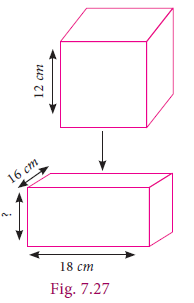
Solution
Cube
Side (a) h equal 6 cm
Cuboid
length (l) equal 18cm
breadth (b) = equal 16cm
height (h) equal what
Here, Volume of the cuboid = volume of the cube
lx bx h equal a3
18x 16 x12 equal 12 x12x 12
h equal 12x 12x 12 by 18x 16
h=6cm
Therefore, the height of the cuboid is 6 cm.
Activity
Take some square sheets of paper / chart paper of given dimension 18 cm × 18 cm. Remove the squares of same sizes from each corner of the given square paper and fold up the flaps to make a open cuboidal box. Then tabulate the dimensions of each of the cuboidal boxes made. Also find the volume each time and complete the table. The side measures of corner squares that are to be removed is given in the table below.
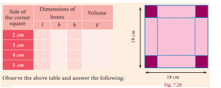
Observe the above table and answer the following:
(i) What is the greatest possible volume?
(ii) What is the side of the square that when removed produces the greatest volume?
Exercise 7.3
1. Find the volume of a cuboid whose dimensions are (i) length = 12 cm, breadth = 8 cm, height = 6 cm (ii) length = 60 m, breadth = 25 m, height = 1.5 m
2. The dimensions of a match box are 6 cm × 3.5 cm × 2.5 cm. Find the volume of a packet containing 12 such match boxes.
3. The length, breadth and height of a chocolate box are in the ratio 5:4:3. If its volume is 7500 cm3, then find its dimensions.
4. The length, breadth and depth of a pond are 20.5 m, 16 m and 8 m respectively. Find the capacity of the pond in litres.
5. The dimensions of a brick are 24 cm × 12 cm × 8 cm. How many such bricks will be required to build a wall of 20 m length, 48 cm breadth and 6 m height?
6. Th e volume of a container is 1440 m3. Th e length and breadth of the container are 15 m and 8 m respectively. Find its height.
7. Find the volume of a cube each of whose side is (i) 5 cm (ii) 3.5 m (iii) 21 cm
8. A cubical milk tank can hold 125000 litres of milk. Find the length of its side in metres. 9. A metallic cube with side 15 cm is melted and formed into a cuboid. If the length and height of the cuboid is 25 cm and 9 cm respectively then find the breadth of the cuboid.
ANSWERS
Exercise 7.3
1.(i) 576 cm cube (ii) 2250 m cube
2. 630 cm3
3. 25 cm, 20 cm, 15 cm 4. 2624000 litres 5. 25000
6. 12 m 7. (i) 125 cm3 (ii) 42.875 m3 (iii) 9261 cm cube
8. 5 m 9. 15 cm
Exercise 7.4
Multiple choice questions
2. If the sides of a triangle are 3 cm, 4 cm and 5 cm, then the area is
(1) 3 cm2 (2) 6 cm2 (3) 9 cm2 (4) 12 cm power 2
3. The perimeter of an equilateral triangle is 30 cm. The area is
(1) 10 √3 cm2 (2) 12√ 3 cm2 (3) 15√ 3 cm2 (4) 25 √3 cm power 2
4. The lateral surface area of a cube of side 12 cm is
(1) 144 cm2 (2) 196 cm2 (3) 576 cm2 (4) 664 cm power 2
5.If the lateral surface area of a cube is 600 cm power 2, then the total surface area is
(1) 150 cm2 (2) 400 cm2 (3) 900 cm2 (4) 1350 cm2
6.The total surface area of a cuboid with dimension 10 cm multiply 6 cm multiply 5 cm is
(1) 280 cm power 2 (2) 300 cm power 2 (3) 360 cm power 2 (4) 600 cm power 2
7.If the ratio of the sides of two cubes are 2:3, then ratio of their surface areas will be
(1) 4:6 (2) 4:9 (3) 6:9 (4) 16:36
8.The volume of a cuboid is 660 cm3 and the area of the base is 33 cm2. Its height is
9.The capacity of a water tank of dimensions 10 m × 5 m × 1.5 m is
(1) 75 litres (2) 750 litres (3) 7500 litres (4) 75000 litres
10.The number of bricks each measuring 50 cm × 30 cm × 20 cm that will be required to build a wall whose dimensions are 5 m × 3 m × 2 m is
ANSWERS Exercise 7.4
1. (3) 2. (2) 3. (4) 4. (3) 5. (3) 6. (1) 7. (2) 8. (3) 9. (4) 10. (1)
Points to remember
• If a, b and c are the sides of a triangle, then the area of a triangle = √s(s- a)(s- b)(s- c) sq. Units, where s= (a+ b+ c) by2. If the length, breadth and height of the cuboid are l, b and h respectively, then
Total Surface Area(TSA) equal 2 (lb plus bh equal lh) square Units
Lateral Surface Area(LSA) equal 2(l plus b)h square Units
•If the side of a cube is ‘a’ units, then
Total Surface Area(TSA) equal 6a power 2 square units
•Lateral Surface Area(LSA) is equal 4 a power 2square units
•If the length, breadth and height of the cuboid are l, b and h respectively, then the Volume of the cuboid (V) equal lbh cube units
•If the side of a cube is ‘a’ units then, the Volume of the cube (V) equal a power3 cube units.
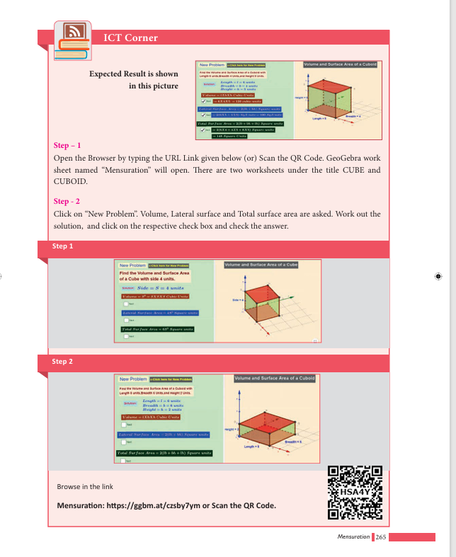